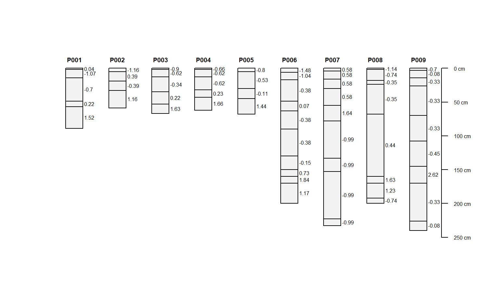
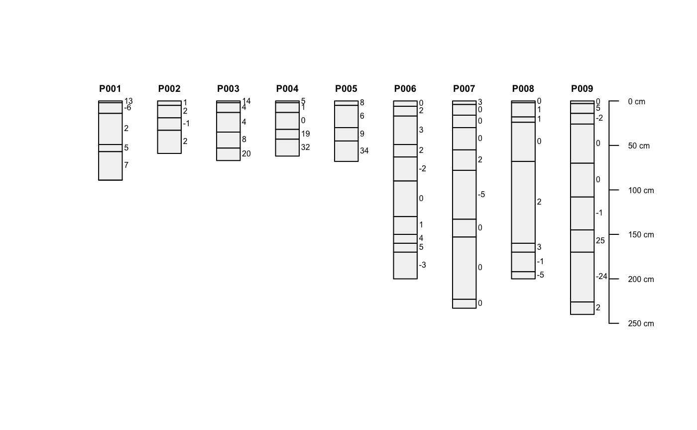
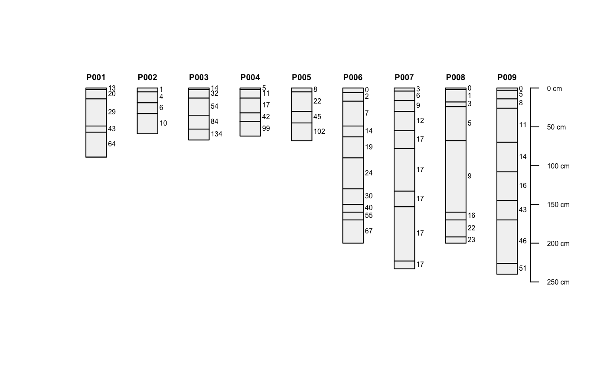
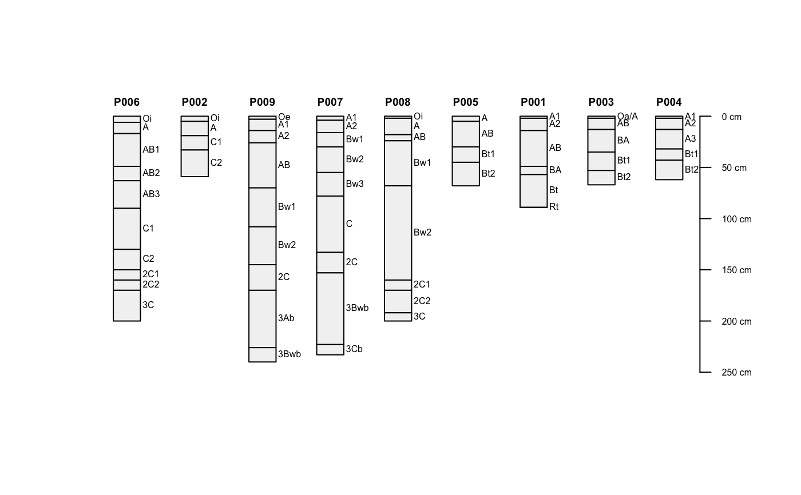
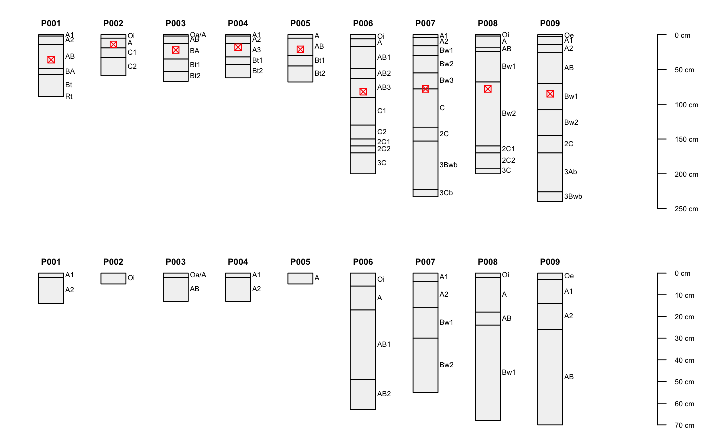

profileApply-methods.RdApply a function to soil profiles within a SoilProfileCollection object, each iteration has access to a SoilProfileCollection object.
# method for SoilProfileCollection objects profileApply(object, FUN, simplify=TRUE, ...)
| object | a SoilProfileCollection |
|---|---|
| FUN | a function to be applied to each profile within the collection |
| simplify | logical, should the result be simplified to a vector? see examples |
| … | further arguments passsed to FUN |
signature(object = "SoilProfileCollection")When simplify is TRUE, a vector of length nrow(object) (horizon data) or of length length(object) (site data). When simplify is FALSE, a list is returned.
data(sp1) depths(sp1) <- id ~ top + bottom # estimate soil depth using horizon designations profileApply(sp1, estimateSoilDepth, name='name', top='top', bottom='bottom')#> P001 P002 P003 P004 P005 P006 P007 P008 P009 #> 89 59 67 62 68 200 233 200 240# scale properties within each profile # scaled = (x - mean(x)) / sd(x) sp1$d <- profileApply(sp1, FUN=function(x) round(scale(x$prop), 2)) plot(sp1, name='d')# compute depth-wise differencing by profile # note that our function expects that the column 'prop' exists f <- function(x) { c(x$prop[1], diff(x$prop)) } sp1$d <- profileApply(sp1, FUN=f) plot(sp1, name='d')# compute depth-wise cumulative sum by profile # note the use of an anonymous function sp1$d <- profileApply(sp1, FUN=function(x) cumsum(x$prop)) plot(sp1, name='d')# compute profile-means, and save to @site # there must be some data in @site for this to work site(sp1) <- ~ group sp1$mean_prop <- profileApply(sp1, FUN=function(x) mean(x$prop, na.rm=TRUE)) # re-plot using ranks defined by computed summaries (in @site) plot(sp1, plot.order=rank(sp1$mean_prop))#>## iterate over profiles, subsetting horizon data # example data data(sp1) # promote to SoilProfileCollection depths(sp1) <- id ~ top + bottom#>#> Error in eval(predvars, data, env): object 'group' not found# make some fake site data related to a depth of some importance sp1$dep <- profileApply(sp1, function(i) {round(rnorm(n=1, mean=mean(i$top)))}) # custom function for subsetting horizon data, by profile # keep horizons with lower boundary < site-level attribute 'dep' fun <- function(i) { # extract horizons h <- horizons(i) # make an expression to subset horizons exp <- paste('bottom < ', i$dep, sep='') # subset horizons, and write-back into current SPC horizons(i) <- subset(h, subset=eval(parse(text=exp))) # return modified SPC return(i) } # list of modified SoilProfileCollection objects l <- profileApply(sp1, fun, simplify=FALSE) # re-combine list of SoilProfileCollection objects into a single SoilProfileCollection sp1.sub <- union(l) # graphically check par(mfrow=c(2,1), mar=c(0,0,1,0)) plot(sp1)#>#># NOT RUN { ## ## helper functions: these must be modified to suit your own data ## # compute the weighted-mean of some property within a given diagnostic horizon # note that this requires conditional eval of data that may contain NA # see ?slab for details on the syntax # note that function expects certain columns within 'x' f.diag.wt.prop <- function(x, d.hz, prop) { # extract diagnostic horizon data d <- diagnostic_hz(x) # subset to the requested diagnostic hz d <- d[d$diag_kind == d.hz, ] # if missing return NA if(nrow(d) == 0) return(NA) # extract depths and check for missing sv <- c(d$featdept, d$featdepb) if(any(is.na(sv))) return(NA) # create formula from named property fm <- as.formula(paste('~', prop)) # return just the (weighted) mean, accessed from @horizons s <- slab(x, fm, slab.structure=sv, slab.fun=mean)$value return(s) } # conditional eval of thickness of some diagnostic feature or horizon # will return a vector of length(x), you can save to @site f.diag.thickness <- function(x, d.hz) { # extract diagnostic horizon data d <- diagnostic_hz(x) # subset to the requested diagnostic hz d <- d[d$diag_kind == d.hz, ] # if missing return NA if(nrow(d) == 0) return(NA) # compute thickness thick <- d$featdepb - d$featdept return(thick) } # conditional eval of property within particle size control section # makes assumptions about the SPC that is passed-in f.psc.prop <- function(x, prop) { # these are accessed from @site sv <- c(x$psctopdepth, x$pscbotdepth) # test for missing PCS data if(any(is.na(sv))) return(NA) # this should never happen... unless someone made a mistake # check to make sure that the lower PSC boundary is shallower than the depth if(sv[2] > max(x)) return(NA) # create formula from named property fm <- as.formula(paste('~', prop)) # return just the (weighted) mean, accessed from @horizons s <- slab(x, fm, slab.structure=sv, slab.fun=mean)$value return(s) } # try with some sample data data(loafercreek, package='soilDB') profileApply(loafercreek, f.diag.wt.prop, d.hz='argillic horizon', prop='clay') profileApply(loafercreek, f.diag.thickness, d.hz='argillic horizon') profileApply(loafercreek, f.psc.prop, prop='clay') # }